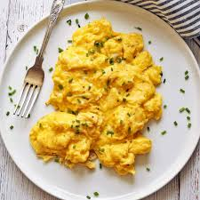

Scrambled egg recipe:-
Eggs are one of my favorite foods. Here is a recipe for deliciously rich scrambled eggs.

Ingredients:-
- 2 eggs
- 1tbs butter
- 2tbs cream
Method:-
- Crack 4 large eggs into a bowl, add salt and pepper to taste, and whisk until fully combined.
- Melt 2 tablespoons of butter or oil in a non-stick skillet over medium-low heat.
- our the whisked eggs into the pan and let them sit until they start to set around the edges.
- Using a spatula, gently push the eggs from the edges towards the center, stirring occasionally until mostly set but still slightly runny.
- Remove from heat just before fully cooked, giving a final stir, then serve immediately.